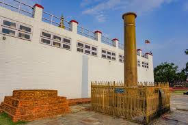
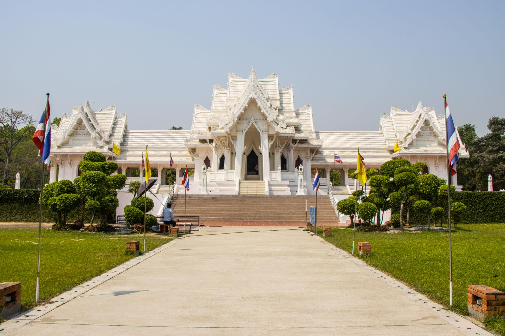

Birth of Gautam Buddha
Lumbini is recognised as the birthplace of Siddhartha Gautama, who later became known as Gautam Buddha.
THE SACRED BIRTHPLACE OF BUDDHA
Explore a special place of history, culture, spirituality and peace in Nepal.
Explore Lumbini →LUMBINI · RUPANDEHI · NEPAL
A PLACE OF MEANING
Lumbini, located in Rupandehi District of Nepal, is revered as the birthplace of Siddhartha Gautama, who became known as Gautam Buddha.
Today, visitors come to explore Maya Devi Temple, the Ashoka Pillar, peaceful gardens and monasteries built by Buddhist communities from around the world. Lumbini shares a message of compassion, harmony and peace.
A place for learning, reflection and peace.
THROUGH THE CENTURIES
Discover the important events in Lumbini's history.
Lumbini is recognised as the birthplace of Siddhartha Gautama, who later became known as Gautam Buddha.
Emperor Ashoka visited Lumbini and erected a commemorative pillar with an important inscription.
Archaeological remains show the development of Buddhist monasteries and stupas over many centuries.
Lumbini was included on the UNESCO World Heritage List because of its cultural and religious importance.
Visitors from around the world come to explore Lumbini's sacred sites, gardens and monasteries.
*623 BCE follows UNESCO's published account. The exact dating of the Buddha's life has been debated by scholars.
WHAT MAKES IT SPECIAL
Lumbini is in Rupandehi District, Lumbini Province, Nepal.
It is a sacred place connected with the life of Gautam Buddha.
Lumbini was recognised as a UNESCO World Heritage Site in 1997.
Visit Maya Devi Temple, the Ashoka Pillar, Sacred Garden and monasteries.
MOMENTS OF SERENITY
Explore the landmarks and peaceful beauty of Lumbini.



Remember to include the photographers' credits and image licences in your project report.
BEFORE YOU GO
Plan your journey to Rupandehi District in Lumbini Province, Nepal.
Make time for the temple, gardens, Ashoka Pillar and monasteries.
Respect sacred places and help keep the surroundings clean.
Check current visiting hours and transport information before travelling.
GET IN TOUCH
Have a question? Try our contact form demo.
Location: Rupandehi, Nepal
Discover the history, culture and peaceful beauty of Lumbini.